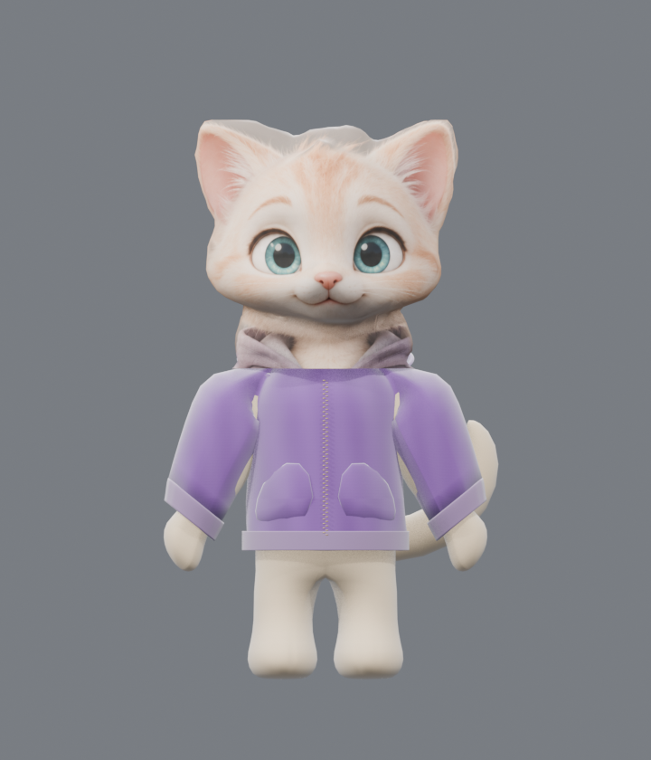
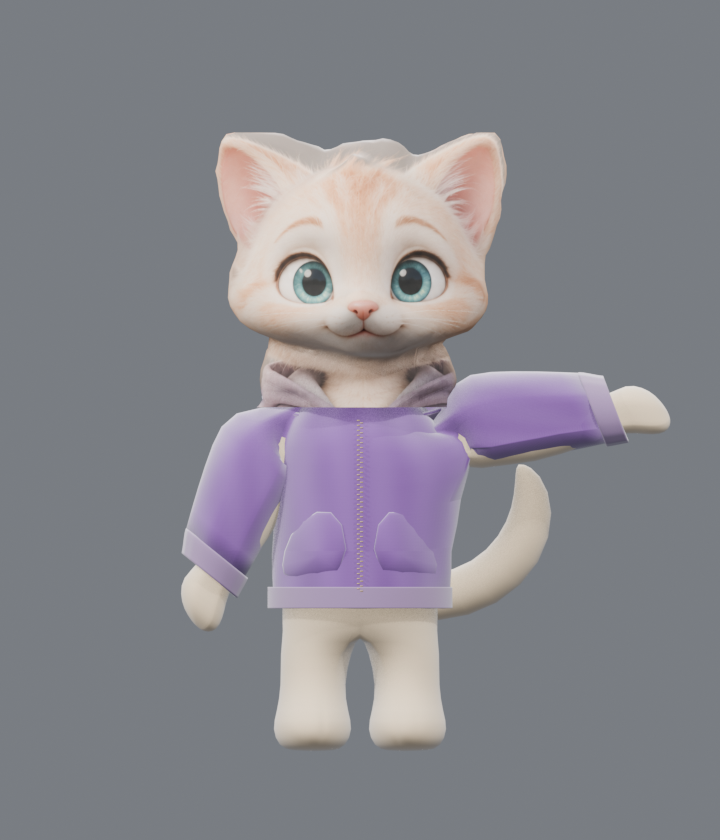
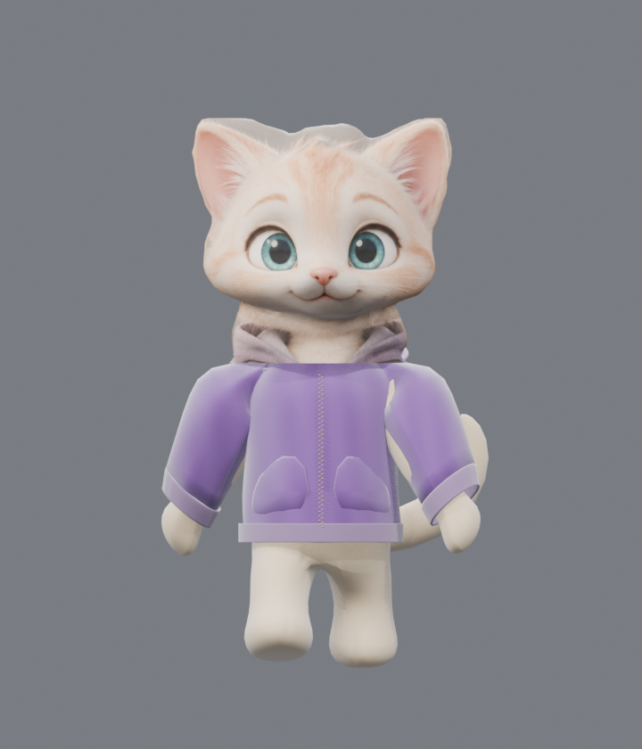
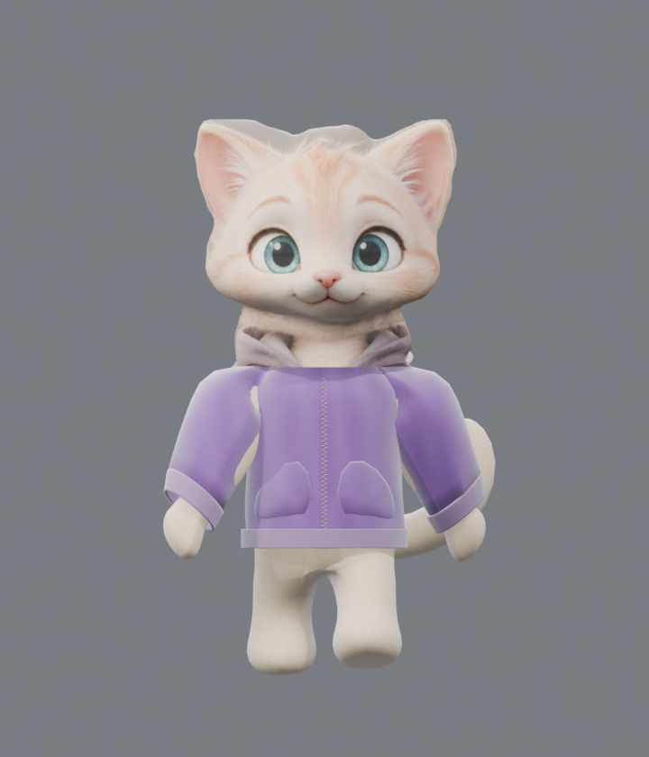
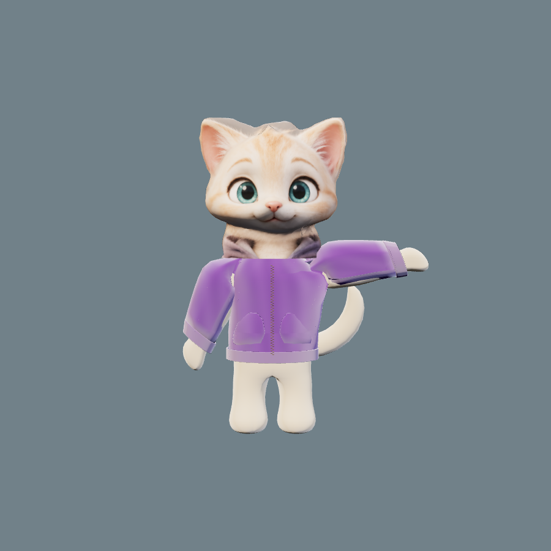
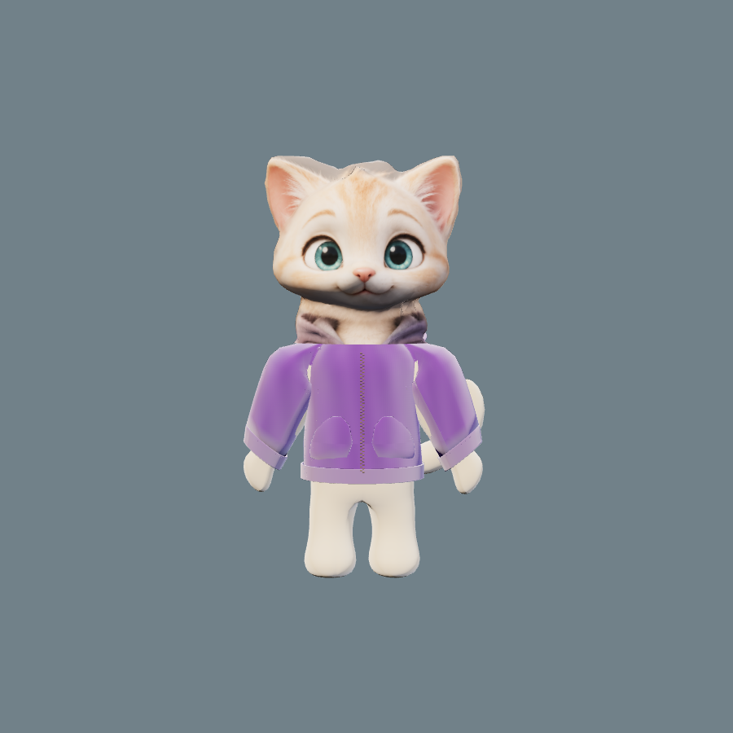

← К игре
Milo: проба рига
Технический черновик, CAT ещё не утверждён.
Собраны отдельная одежда и скелет. GLB содержит две пробные анимации; лапа и ноги действительно двигаются. Обе анимации также сохранены в редактируемом исходнике Blender. Проверка в браузерном WebGL выявила видимый стык плеча и разницу в качестве между головой и телом. Одна лишь коррекция весов плеча стык не устранила: нужна новая форма одежды. Корпус, лапы, хвост и мимика тоже требуют художественной работы. В игре используется прежний CAT.
Взмах лапой

Исходная поза

Wave — поднятая лапа
Чередование ног

Run — фаза 1

Run — фаза 2
Как GLB выглядит в браузере
Кадры сняты с экспортированного файла через Three.js GLTFLoader и AnimationMixer. На взмахе хорошо виден стык рукава и корпуса. Это дефект черновика, а не готовый образ персонажа.

WebGL · Wave_WIP

WebGL · Run_WIP
Скачать пробный GLB с двумя клипами · Предыдущая проба сетки
Это контрольные кадры, а не интерактивный проигрыватель анимаций. Исходник Blender находится в ветке GitHub. Публикация отделена от игрового CAT и не содержит данных доступа к ISP.